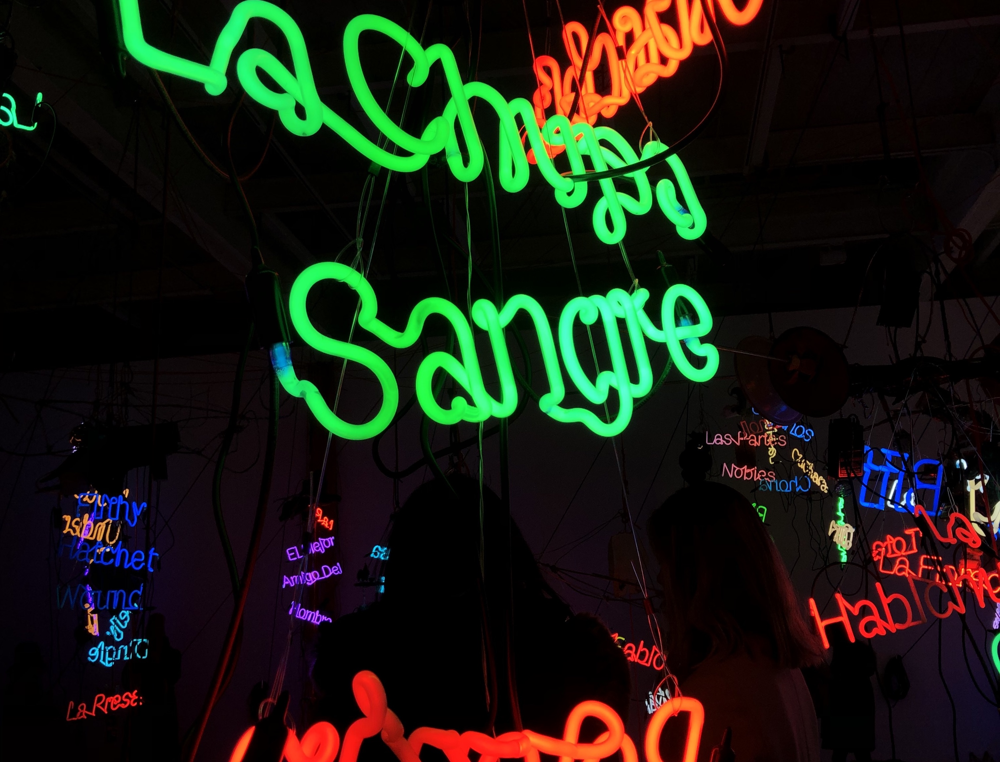

Tijuanatanjierchandelier, 2006, Installation.
Jason Rhoades has focused much of his work around themes of consumerism, cultural diaspora, and the use of language. In this exhibition he takes an honest look at two cities located “at the borders between the so-called developing world and the Euro-American West.” Tijuana and Tangier are defined by their cultural vibrancy but also how their economies rely on touristic and consumerist exploitation of this. In this exhibition, 44 chandeliers are hung above an array of items and souvenirs collected by the artist during his travels. His goal is to challenge many contrasts including toeing the line between cultural expression and cultural appropriation. The neon lights attached to the chandeliers include Spanish and English words for “vagina.” This is used to visualize “the ‘pornographic’ excess of information in a globalized, media-saturated digital age, which he further links to the intermixing of local identity and global consumerism through the collection of objects and materials that populate the immersive installation.”
I enjoyed how oversaturated the amount of content in the room as to convey the idea of mass consumption. If there are too many things for your brain to absorb it begins to raise questions about what is necessary in regards not only to survival but cultural identity. One thing I found interesting was how many people were at this exhibition. It was David Zwirner so obviously it is very famous and attracts many people but I wonder if that was intentional. Was the room meant to be crowded like a market it was trying to reflect? Or was this just an overlooked outcome of such a popular gallery. People were standing in front of the pieces taking pictures which mimics the type of fascination people have while traveling. It didn’t feel as if people were interested in the art but how they could take a cool picture in front of it. I wonder how Rhoades would feel about this for he passed away in 2006.